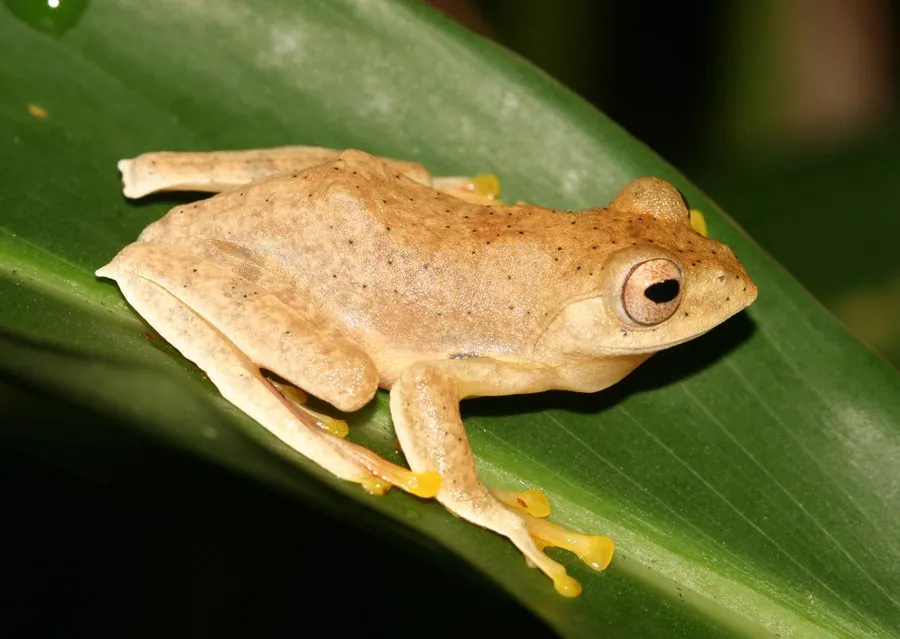

两栖动物 · 动物界
红蹼树蛙 Rhacophorus rhodopus

中国南方与东南亚的小型飞蛙，趾间蹼膜呈橙红色，体色十分醒目，能从树上滑翔到低处，夜间在灌丛中鸣叫捕虫。
- 分类
- 门脊索动物门纲两栖纲目无尾目科树蛙科属树蛙属
- 栖息环境
- 低山灌丛、林缘、水边植被与湿润森林
- 地理分布
- 中国云南、广西、海南等地及东南亚的湿润林区
- 保护级别
- IUCN 无危（LC）；中国未列入国家重点保护名录
物种志
红蹼树蛙体长 4–5.5 厘米，身体扁平，头部宽大，眼睛大而突出，背部呈鲜绿色或黄绿色，腹面淡黄白色，趾间蹼膜呈橙红或红色，“红蹼”之名由此而来；趾端有吸盘，四肢外侧也有皮膜，滑翔时可展开增加升力。
它分布于中国云南、广西、海南等地以及东南亚的湿润森林，栖息于低山灌丛、林缘和水边植被，夜间活动，捕食昆虫和蜘蛛。繁殖期雄蛙在水边枝叶上鸣叫，雌蛙把卵产在悬于水面上方的泡沫巢中，孵化后的蝌蚪落入水中继续发育。它在中国属于受关注的雨林指示物种，目前被列为无危，但栖息地破坏和农药使用对其种群有影响；它未被列入国家重点保护名录，仍需避免捕捉和破坏繁殖地。
形态与习性
- 食性昆虫和蜘蛛
- 体长4–5.5 cm
- 寿命约 5–8 年
- 繁殖卵生，卵产于水面上的泡沫巢，蝌蚪落入水中
- 活动节律夜行性
- 特点趾间蹼膜呈橙红色，可展开滑翔
趣味知识
- 红蹼树蛙的蹼膜呈橙红色，在绿色叶片间十分醒目。
- 它把卵产在水面上方的泡沫巢里，蝌蚪孵化后直接落入水中。
- 红蹼树蛙是热带雨林和季雨林环境的指示物种，对栖息地变化敏感。